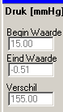
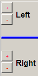
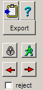
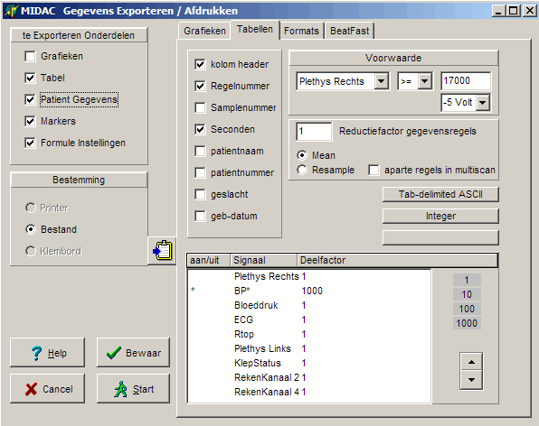

(ff2) Veneuze Compliantie (F89)
Omschrijving
Deze functie berekent de druk-daling en volume-daling na het het openen van een cuff op één van de extremiteiten.
De volume-daling, gemeten op plethysmografische wijze met een kwiktouwtje, kan in absolute waarde worden omgezet door handmatig het nul-volume in te geven.
|
In de bovenste grafiek wordt het volume signaal weergegegen. De hier weergegeven waarden, zijn uitgedrukt in absolute waarden [ml], op basis van het handmatig ingevulde nulvolume.
Het nulvolume kan alleen worden gewijzigd als het eerste event zichtbaar is.
In de bovenste grafiek wordt ook het klepsignaal weergegeven.
Onder het nulvolume staat nog de cuffdruk vermeld, welke gemeten wordt over een periode van 5 seconde voorafgaand aan het openen van de cuffs. |
|
 |
In de onderste grafiek is de druk weergegeven.
De numerieke drukwaarden aan de linkerkant zijn weergegeven in [mmHg] |
Onderaan het plaatje staan alle trial-nummers vermeld.
Het actieve trialnummer is gehighlight, in dit geval 1.
Trials die verworpen zijn, zijn rood gekleurd.
De trials die handmatig gecorrigeerd zijn, zijn groen gekleurd.
|
Rechts bovenaan, vinden we de versterkersknoppen. Hiermee kan worden ingezoomd op de signalen. |
 |
|
Met het klembord knopje, wordt het gehele functie venster als grafische afbeelding naar het cilpboard gekopieerd en kan vervolgens via plakken in ieder willekeurig document worden geplaatst.
Met het vraagteken, wordt het help bestand van deze funktie geopend in de default browser. De knop export, exporteert alle resultaten naar een tab-delimited ASCII-file (zie hierna). Het slotje en het groene mannetje dienen voor de handcorrectie, zie hierna.
Met de rode pijlen kan naar de vorige / volgende trial worden gesprongen. Zolang het funktie venster focus heeft, kan hiervoor ook PgUp en PgDn worden gebruikt. Daarnaast kan men op de trial-nummers klikken om een gewenste trial te tonen.
Helemaal onderaan staat nog een reject hokje, door dit aan te vinken wordt de actuele trial verworpen. |
 |
Handcorrectie
De berekende lijnen en de bijbehorende numerieke waarden kunnen interaktief worden verschoven.
Export
De export kan via het hoofmenu worden gestart, maar ook direct door in het funktie-venster op de export knop te drukken. Daarna verschijnt het standaard export venster, dat normaal gesproken goed zal zijn ingesteld. Vervolgens drukt men op Start en de export file wordt klaargemaakt.

Het beeld tijdens de export:
Als de export file klaar is wordt gevraagd of men de export file direct in een extern programma wil bekijken.
Drukt men op JA, dan wordt de exportfile direct in het externe programma geopend (bv Excel).

De exportfile in Excel:
Om de file te openen, zoekt de TestOrganizer naar het programma dat door windos aan deze fileextensie is gekoppeld. In windows kan dit het gemakkelijkst worden ingesteld door dit type file éénmalig te openen vanuit de verkenner met de gewenste toepassing.
Via het data filter in Excel kan eenvoudig het resultaat van enkel deze funktie worden geselekteerd.
base1 = het volume [ml] voor het openen van de cuffs
level1 = het volume [ml] na het openen van de cuffs
base2 =de druk [mmHg] voor het openen van de cuffs
level2 = de druk [mmHg] na het openen van de cuffs
delta1 = het volume verschil [ml]
delta2 = het drukverschil [mmHg]
volume= nulvolume [ml]
cuffdruk = cuffdruk [mmHg]
Instellingen Venster
|
Links onder kunnen de kleuren van de signalen en achtergrond worden ingesteld. Gewoon klikken en een kleur kiezen.
Onderaan kan de totale acquisitie lengte (in sec) en de pre-acquistie tijd (tijd voor het openen van de cuffs) worden ingesteld. Door na het wijzigen op ENTER te drukken, worden de gehele opname opnieuw gescand. |
Ingangs Signalen